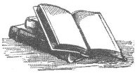

İnanç? Ben neye inanıyorum? Ben güneşe inanıyorum. Taşa. Güneş dogmasına ve taş öğretisine. Kana, ateşe, kadına, nehirlere, kartallara, fırtınalara, davullara, flütlere, banjolara ve süpürge kuyruklu atlara inanıyorum.
EDWARD ABBEY
Bir dini seçmem gerekseydi, sanırım güneşe tapardım. Her şeye hayat ve bereket veren şeydir güneş. Yerkürenin gerçek tanrısı odur.
NAPOLÉON BONAPARTE
Michael Angelo'ya, Velasquez'e ve Rembrandt'a inanıyorum; resmin kudretine, renklerin gizemine, her şeyin güzellik aracılığıyla sürekli bir kurtuluşa erdiğine ve bu elleri kutsal kılan sanatın mesajına inanıyorum.
GEORGE BERNARD SHAW
İnsanlara duyduğum inançtan başka bir inanca ihtiyaç duymuyorum. Eskinin Konfüçyüs'ü gibi, dünyanın ve üstündeki yaşamın mucizelerine kendimi öyle kaptırdım ki, cenneti ya da melekleri aklıma bile getiremiyorum.
PEARL S. BUCK
Evrendeki sevgi ve bunun etrafındaki keskin merak: işte benim dinim.
JOHN BURROUGHS
Deneyimleyebileceğimiz en güzel şey gizemdir. Gerçek sanatın ve gerçek bilimin beşiğinde sallanan en temel duygu budur.
ALBERT EINSTEIN
Bu ülkenin kilisesi kölelere karşı yapılan haksızlıklara yalnızca ilgisiz kalmakla yetinmiyor, karşı tarafın yanında saf da tutuyor! Kendi açımdan, şu papazlar tarafından tapılan kutsal kitabın yerine, diyorum ki hoş geldin kâfirlik, hoş geldin ateizm, hoş geldin hiçlik! Onlar dini, bir tiranlık motoruna ve barbar bir zalimliğe dönüştüyor ve Thomas Paine, Voltaire ve Bolingbroke'un toplamda ürettikleri kâfir yazılardan çok daha fazla kâfirliği bu çağda yapıyorlar.
FREDERICK DOUGLASS
Son tahlilde hiçbir şey, kendi zihnimiz kadar kutsal değildir.
RALPH WALDO EMERSON
Sekülerizmde gizem, maskaralık, rahipler, seremoniler, sahtelik, mucize ve cezalandırma yoktur. Kır zambaklarının nasıl büyüdüğüne kafa yorar, yarın için kaygılanır. Bütün dünyaya şunu söyler: Yiyebileceğinizi, içebileceğinizi ve giyinebileceğinizi unutmayın;[8] zevk alabileceğinizi unutmayın; istemeyebileceğinizi unutmayın; verebileceğinizi ve asla ihtiyaç duymayabileceğinizi unutmayın.
ROBERT G. INGERSOLL
Benim din konusundaki görüşlerimle ilgili duyduklarınız elbette birer yalan, hem de düzenli tekrarlanan bir yalan. Kişisel bir tanrıya inanmıyorum ve bunu reddetmek bir yana açıkça da belirttim. İçimde dinsel olabilecek herhangi bir şey varsa eğer, bu, bilimimizin ortaya çıkarabildiği kadarıyla dünyanın yapısına duyduğum sınırsız tutkudur.
ALBERT EINSTEIN
Birçok insan gibi benim de bir dinim yok ve dalgalarda savrulan küçük bir teknede oturuyorum. Görevimin ne olduğuna dair şüphelerin içinde yaşıyorum. Bana kalırsa bunda bir saygınlık var; çalışmaya devam etmekte.
FEDERICO FELLINI

Tanrıları inkâr edişiyle ateizm, aynı zamanda insanlığın da en büyük olumlaması ve insanlık aracılığıyla hayata, amaca ve güzelliğe sonsuz evet anlamına geliyor.
EMMA GOLDMAN
Sorunlarımızı, dualara ve hayallere bırakmadan kendi gücümüz ve girişimlerimizle çözelim. Kendimize inandığımızda, tanrılara iman etmek zorunda olmadığımızı da fark edeceğiz.
RUTH HURMENCE GREEN
Birinin işine yarayacağına dair en zayıf ihtimal için bile mum yakmak, ilahi söylemek, dua etmek, zekât vermek dahil her şeyi yapardım.
ANN RICHARDS
Hayal gücüm benim manastırımdır ve ben de onun keşişiyim.
JOHN KEATS
Kendinizden daha yüce bir tanrı yoktur.
WALT WHITMAN
Tanrı'ya inanıyorum, ama ona Doğa diyorum.
FRANK LLOYD WRIGHT
Doğa öylesine muazzamdır ki, onun ötesinde başka bir şeye ihtiyacımız yoktur.
RUTH HURMENCE GREEN
Hem hayatımı hem de resimlerimi Tanrı olmadan da gayet iyi kotarabilirim, ama benim gibi hastalıklı birisi için, kendimden daha yüce bir şey olmadan bunu yapamam; bu da hayatım, yani yaratma gücümdür.
VINCENT VAN GOGH